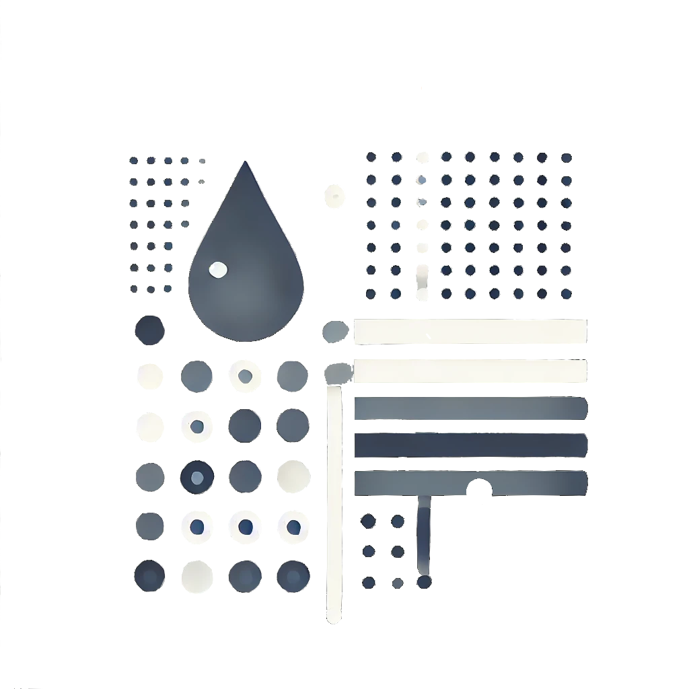

Metody vyhodnocování vodohospodářských dat
ZVZ117E ZS 24/25

1 Úvodem
Na těchto stránkách se nachází průvodce ke cvičením z kurzu ZVZ117E Metody vyhodnocování vodohospodářských dat, vyučovaném na Fakultě životního prostředí České zemědělské univerzity. Jeho obsahem jsou materiály ke všem cvičením spolu se zkrácenou teoretickou částí. Text nemá za ambici komplexní teoretický výklad látky - nenahrazuje ani přednášky ani skripta. Jedná se o průvodce cvičeními, nicméně pro potřeby cvičení teorii ve zkrácené podobě připomene.
Vzhledem k tomu, že je tento text orientován na osvojení základních postupů při statistickém zpracování dat, jednotlivé postupy jsou voleny jako nejnázornější možné. Obecně tedy platí, že veškeré úkony jsou prováděny se zvoleným didaktickým cílem, který je vytyčen na začátku každého cvičení. Tentýž kód je často možné zapsat elegantněji, nebo efektivněji s pomocí pokročilejších nástrojů, na jejichž existenci je čtenář občas doplňkově upozorněn.
1.1 Doporučená literatura
Popisná statistiky je v cvičena v rozsahu textu Puš (2007) a Jarušková (2006) obsahuje úvod do matematické statistiky.